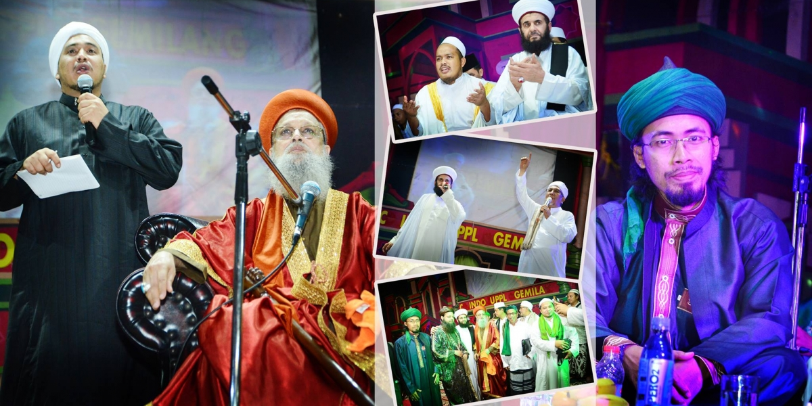
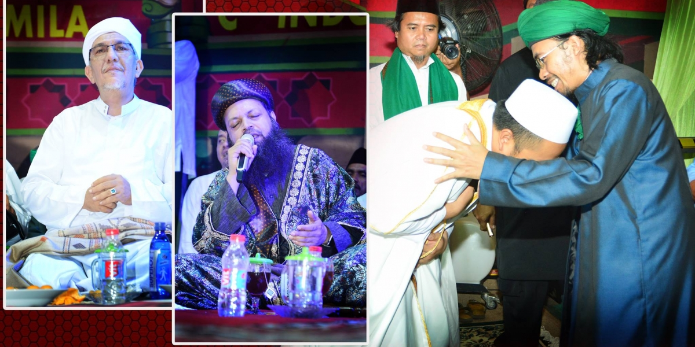

Latar Belakang Majelis

Munculnya berbagai macam masalah keagamaan, mulai dari kurangnya ilmu pengetahuan, hingga permasalahan khilafiyah yang dibesar-besarkan, mendorong sebuah keinginan HABIB ALWI BA ‘ALAWI, untuk menuntaskan permasalahan tersebut hingga ke akarnya. Meski sudah banyak kota dijelajahi, guna menuai bibit unggul pengetahuan keagamaannya, namun pada akhirnya karawang lah yang menjadi tambatan perahu dakwahnya guna menggelorakan syiar islam di kota ini.

Bertolak dari sebuah Musholla kecil, dibilangan Perumnas Bumi Teluk Jambe, beliau memulai sebuah konsep dakwah besar yang tak ingin ia akhiri, hingga para jamaah menginginkan terbentuknya sebuah wadah yang bisa menaungi perahu dakwah ini, agar mudah dikenali dan diikuti oleh banyak orang. Setelah menjalani istikhoroh yang panjang, akhirnya “AHBABURROSUL” menjadi sebuah identitas yang semoga akan meningkatkan kecintaan jamaah terhadap nabi kecintaannya.

Habib Alwi dengan AHBABURROSUL yang sudah memiliki jamaah hingga ribuan orang ini, mengusung dakwah dengan konsep TA’LIM yaitu pembelajaran agama dengan pembekalan ilmu fiqh dan disiplin ilmu agama lainnya. Serta dengan konsep TADZKIR yaitu pengistiqomahan dzikir kepada Allah SWT, dengan harapan keilmuan para jamaah yang tinggi di dalam agama akan dibarengi dengan kelembutan hati dan sikap hasil dari dzikir tersebut. Sebuah paduan konsep dakwah yang efektif dan bisa diterima semua lapisan tanpa ada pengecualian.
Alamat Sekretariat Majelis: Perumnas Telukjambe Blok NQ No: 16 Karawang 41361-Jawabarat-Indonesia


Ahbaburrosul Indonesia 2021